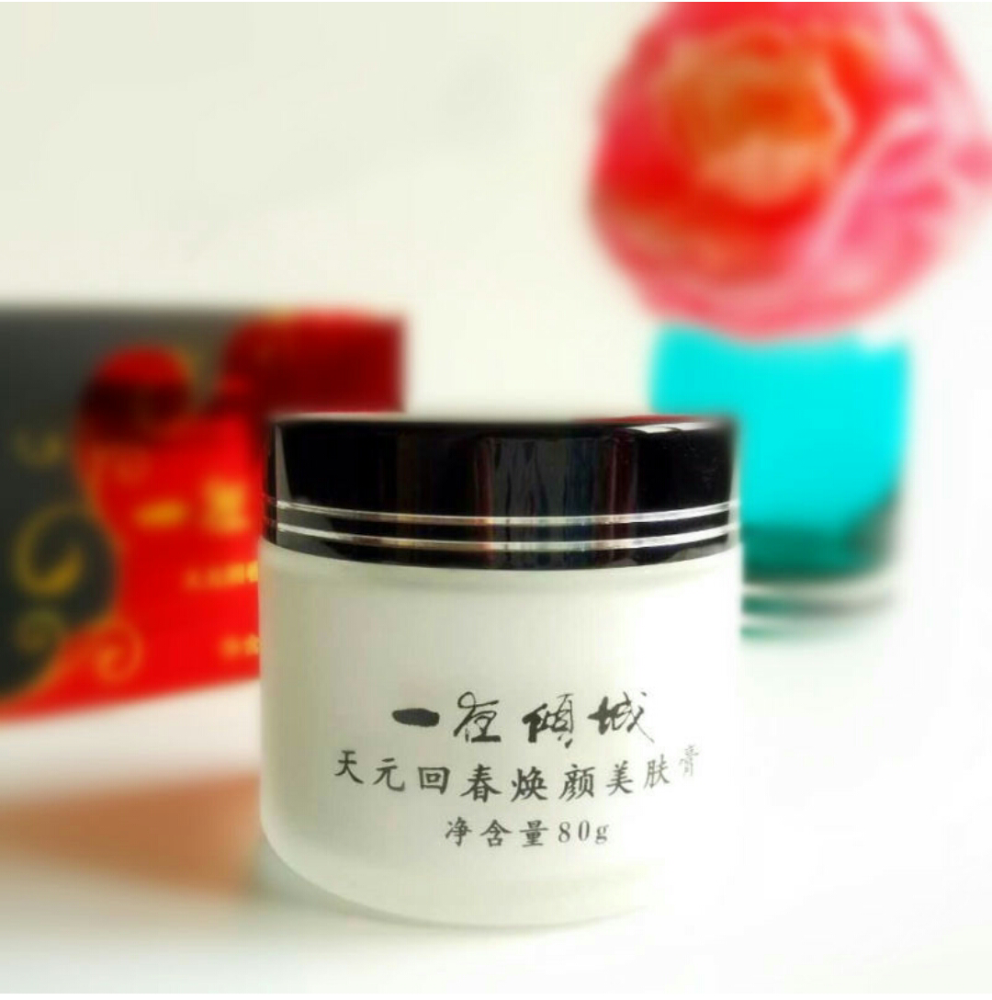

种草狂：国货不只有大宝 这些也好用到逆天
自从代购海淘大肆流行，不少宝宝都很喜欢在国外买买买，尤其是美妆产品，香奈儿迪奥TF雅诗兰黛摆满了梳妆台，而且国人的购买力惊人，不少热门产品更是卖到断货！洋货摆在显眼的专柜，不少国产的美妆品却遗忘在超市小角落，想想还真的替国货委屈呢！
说起国货，很多人第一反应就是天天见的大宝，其实国货有不少牌子虽然低调，但是口碑却不错，就像屡获殊荣的迷奇，和贵贵的馥蕾诗茱莉蔻一样都属于天然植物化妆品哦~早在洋货还没有进军天朝的时候，一瓶迷奇高级神奇美容蜜在日本要卖3000+日元（当时汇率折算为300+人民币），四不四有点腻害呢？
国货精品1：迷奇一夜倾城天元回春焕颜美 这款是晚霜，一夜倾城这名字听着就有一晚让颜值回神奇魔力，蕴含果酸，可以改善老旧角质，天然美白，白色的膏体，看起来比较厚重，其实质地轻薄柔滑，轻轻涂抹就延展开来，打圈按摩一下就完全被肌肤吸收，吸收后肌肤细纹淡化了不少，去黄提亮效果非常好。